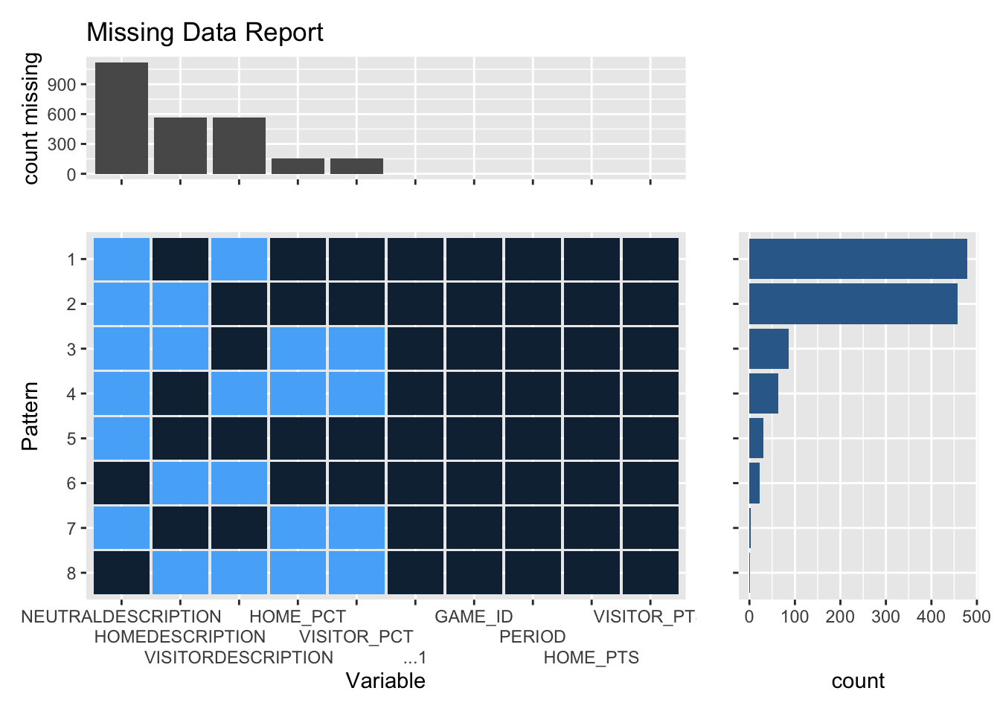

Chapter 4 Missing values
Play-by-play missing data plot: 
There are no fully complete cases in our play-by-play data set. While this appeared troublesome at first, further analysis of the dataset showed that these missing values are fairly intuitive. Most notably, there are 3 types of descriptions for (home description , away description, neutral description ). Intuitively, since we are looking at an for each row only 1 will appear in the data set. After looking through the data set, there are 2 specific cases in which there are both home and away descriptions: steal and turnover and shot attempt and blocked shot. Therefore, as we can see in our visualization of missing data, the “Neutral Description” variable is by far the least populated, which makes sense since there are very few reported neutral events in a game (such as: end of quarter 1, start of quarter 4…). However, as explained by the nature of home/visitor description, it is logical why these variables are also sparsely populated, due to their inherent mutually exclusive nature. As a result, we will end up merging these 3 columns into a single “description” variable, which will simply describe the play and will not be organized by home/away/neutral. This merged column will not contain missing values.
Win probability is a crucial aspect of our analysis, and in our data set, we noticed that no win probabilities for either team are reported past the 5 minute mark in the 4th quarter. It is for this reason that the “HOME_PCT” and “VISITOR_PCT” also contain the next largest count of missing data. Due to this, we will not consider any win probabilities past this point in the game. However, given that our main research question is to classify the reasons for a game that ends in an upset, the 5 minute mark in the 4th quarter is a reasonable of the game to consider as a threshold. Therefore, it must be made clear that throughout our project, we are only able to identify games as ‘chokes’ when a team had a greater than 90% win probability, prior to entering the final 5 minutes of the game. Naturally, we have no issue with this restriction on our data set since the last few seconds of a game are likely extremely volatile and would likely skew our data. As a result, our chokes can be interpreted as instances when a team has a sizable lead at some point in the game prior to the final 5 minutes, and then subsequently loses.
Other than these 2 important metrics, every other column is completely populated, since they contain data such as the time and points scored for each team, which can logically be reported at every instance of the game.